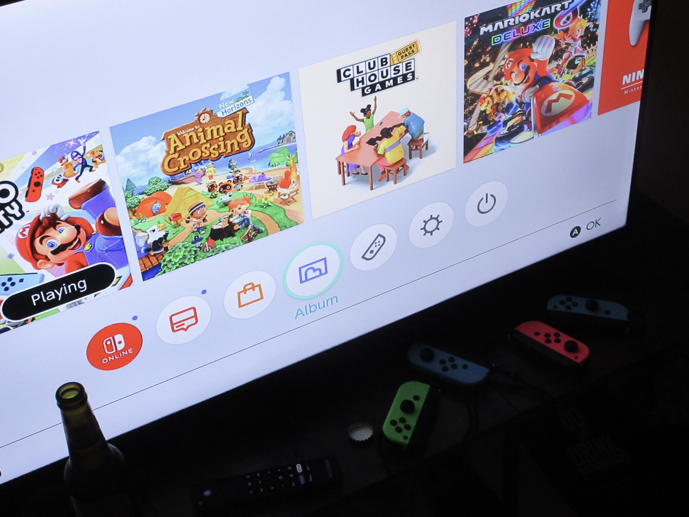
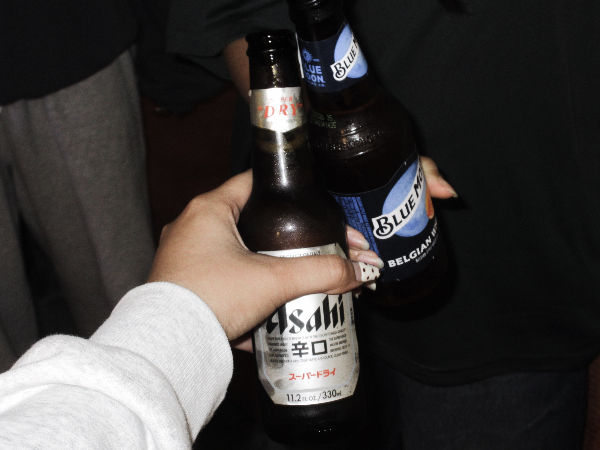
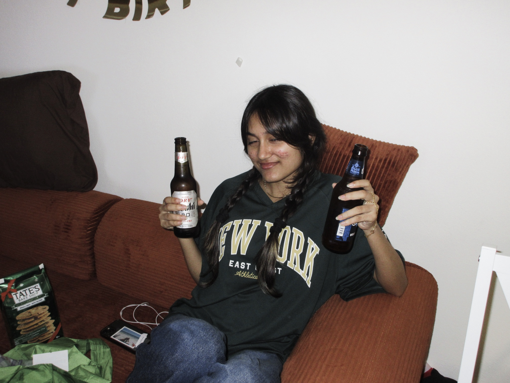
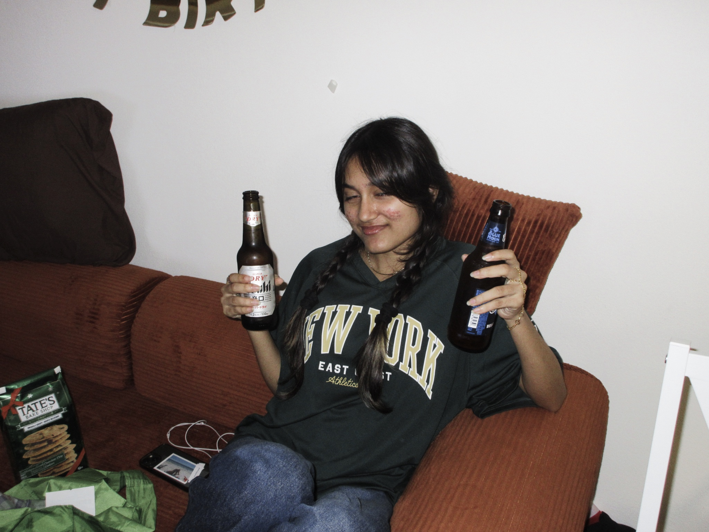

mario’s party
my friend flew home for a quick break and came back with treasure. old nintendo switches, game carts that click in with the most satisfying sound, and a plan that only a rainy night can birth. mario party. i had never played before and they laughed at the way i held the switch like it was a camera. we grabbed a hot pizza from little caeser’s and a few beers on the way. that pizza for nights like this is so slept on. the box steamed up the room, controllers on the coffee table, and suddenly it felt like being ten again.


 
